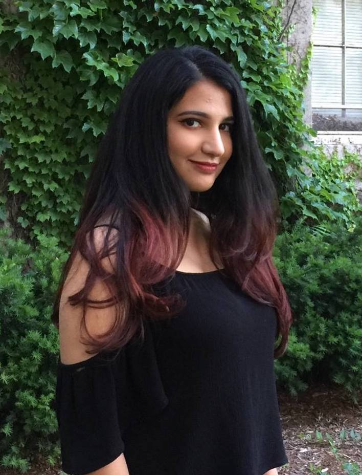
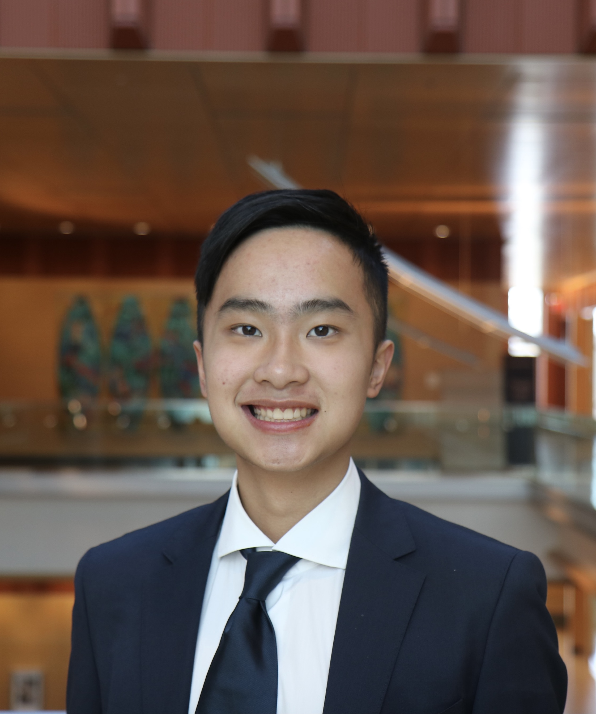

Want to Do Research?
Ph.D.
I am not currently recruiting Ph.D. students.
Master's or Undergraduate
I love working with students! However, I want to ensure the experience is mutually rewarding. I mostly study existing use of technologies or online communities using qualitative methods. I use this qualitative research to inform how to design, develop, and evaluate accessible systems. If interested in pursuing an unsolicited research opportunity* with my research group, (1) read through the active research projects on my research page, (2) read at least one of my authored papers on a topic that interests you, (3) decide what type of research interests you most and complete one of the starter projects below.
If you are interested in pursuing qualitative research, write two paragraphs extending one of my existing areas of research. These paragraphs should clearly state the way(s) in which you wish to extend this work, why, and describe 1-2 methods you would use to do so. Preferably, the "why" should be based on some existing body of work, whether this be an existing research study or a recent news article. Once done, please submit via email and we can set up time to talk.
If you are interested in building something, you do not need to have a computer science degree. Instead, I want to know that you are willing and can quickly learn something new. Currently, my research focuses on accessible voice-based interfaces. As such, use online tools like Twilio, Google Cloud, or Microsoft Azure to prototype a basic voice interface that could be useful for older adults or people with disabilities. This system (i.e. IVR prototype, smart assistant skill) does not need to be complex, and could be extending an existing tutorial in a unique way. When done, send instructions on how I could listen and we can set up time to talk.
*Note, if you have expressed interest due to a job posting, UROP, or MTOP you do not need to complete the starter project, but are welcome to.
Currently working with:
Ph.D. Students
 Rahaf Alharbi Pronouns: she/her Program: Ph.D. in Information Interests: disability studies, accessibility, privacy, and human-computer interaction
Master's Students
Gina Spelman Pronouns: she/her/hers Program: M.S. in Information Interests: HCI, User Experience Design + Research, Visual Communication, Information Architecture, Interaction Design
Anandita Aggarwal Program: M.S in Information
Luke Kudryashov Program: M.S in Information
Lauren Trimble Program: M.S in Information
Alum
 Kerry Lee Pronouns: he/him Program: B.S. in Economics, Pre-Med Interests: Life Sciences, Technology